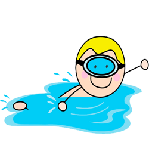

На главную
Плавание

Плавание - один из самых старых видов спорта. Спортивное плавание появилось в конце XV века. В 1515 г. в Венеции проводились состязания пловцов, это были одни из первых соревнований по плаванию. В соревнованиях применяются спортивные (правильные) способы плавания, которые по сравнению с самобытными способами имеют большое преимущество в скорости.